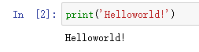
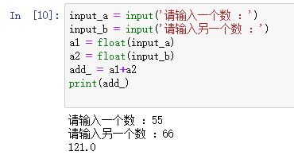
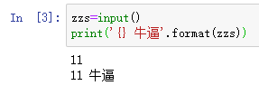
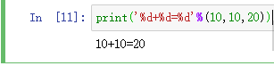
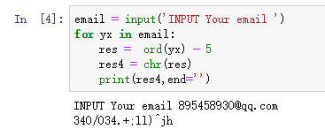
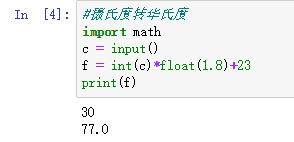
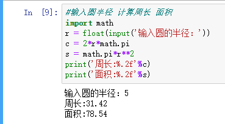
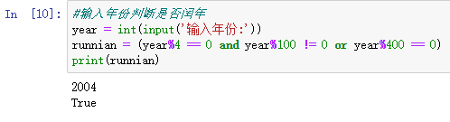

零基础学习pythonDay1
1.首先介绍一下python
Python的优缺点
Python的优点很多，简单的可以总结为以下几点。
简单和明确，做一件事只有一种方法。
学习曲线低，跟其他很多语言相比，Python更容易上手。
开放源代码，拥有强大的社区和生态圈。
解释型语言，天生具有平台可移植性。
支持两种主流的编程范式（面向对象编程和函数式编程）都提供了支持。
可扩展性和可嵌入性，可以调用C/C++代码，也可以在C/C++中调用Python。
代码规范程度高，可读性强，适合有代码洁癖和强迫症的人群。
Python的缺点主要集中在以下几点。
执行效率稍低，因此计算密集型任务可以由C/C++编写。
代码无法加密，但是现在的公司很多都不是卖软件而是卖服务，这个问题会被 淡化。
开发时可以选择的框架太多（如Web框架就有100多个），有选择的地方就有错误。
本文用的是 Windows环境 以下只介绍windows用到的东西
可以在[Python官方网站](https://www.python.org)下载到Python的Windows安装程序（exe文件），需要注意的是如果在Windows 7环境下安装需要先安装Service Pack 1补丁包（可以通过一些工具软件自动安装系统补丁的功能来安装），安装过程建议勾选“Add Python 3.6 to PATH”（将Python 3.6添加到PATH环境变量）并选择自定义安装，在设置“Optional Features”界面最好将“pip”、“tcl/tk”、“Python test suite”等项全部勾选上。强烈建议使用自定义的安装路径并保证路径中没有中文。安装完成会看到“Setup was successful”的提示，但是在启动Python环境时可能会因为缺失一些动态链接库文件而导致Python解释器无法运行，常见的问题主要是api-ms-win-crt\*.dll缺失以及更新DirectX之后导致某些动态链接库文件缺失，前者可以参照[《api-ms-win-crt\*.dll缺失原因分析和解决方法》]()一文讲解的方法进行理或者直接在[微软官网](https://www.microsoft.com/zh-cn/download/details.aspx?id=48145)下载Visual C++ Redistributable for Visual Studio 2015文件进行修复，后者可以下载一个DirectX修复工具进行修复
登陆Anaconda navigator网站安装Anaconda navigator集成编译工具
打开Anaconda navigator使用jupyter作为编译工具
点击 创建新的目录
功能栏相应功能不用多说了吧 懂的都懂
Python语言对于缩进要求非常严格
一般来说是1个Tab键或者4个空格
下面是几个非常简单的小例子
如果有一定其他语言学习经历的朋友学起来会非常容易
程序员对世界发出的问候
Helloworld！

a,b 相加

利用format输出

利用%d输出

使用ascii码简单加密邮箱

摄氏度转华氏度

圆的周长和面积

判断年份是否闰年
